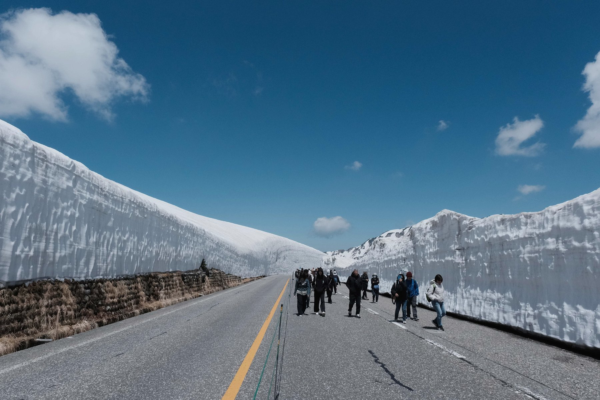
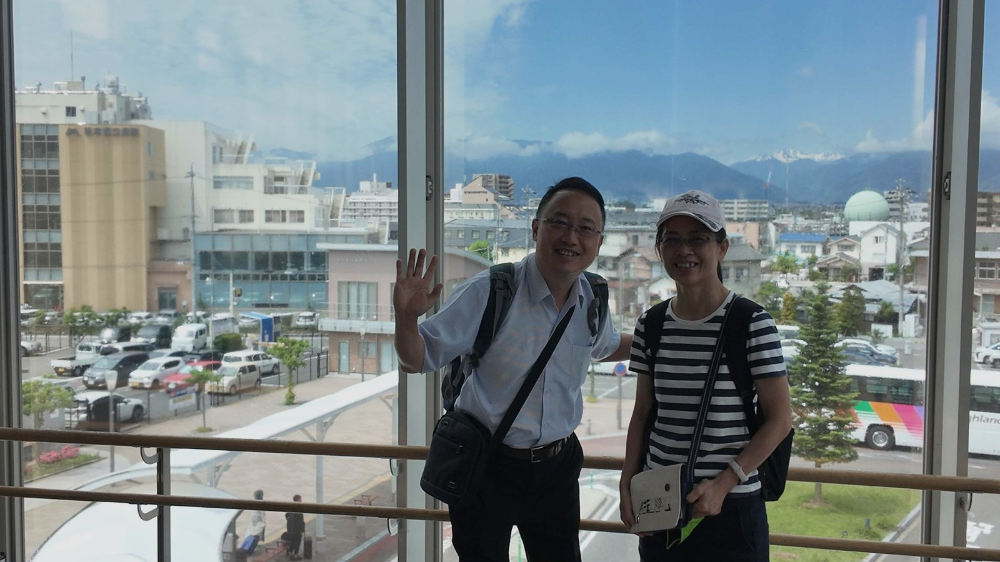
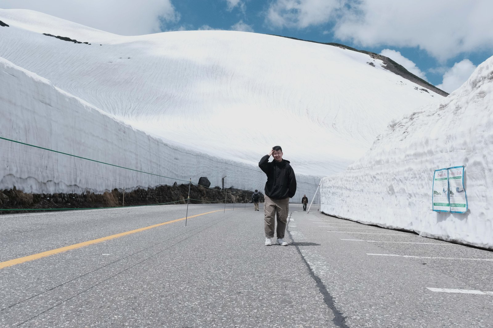
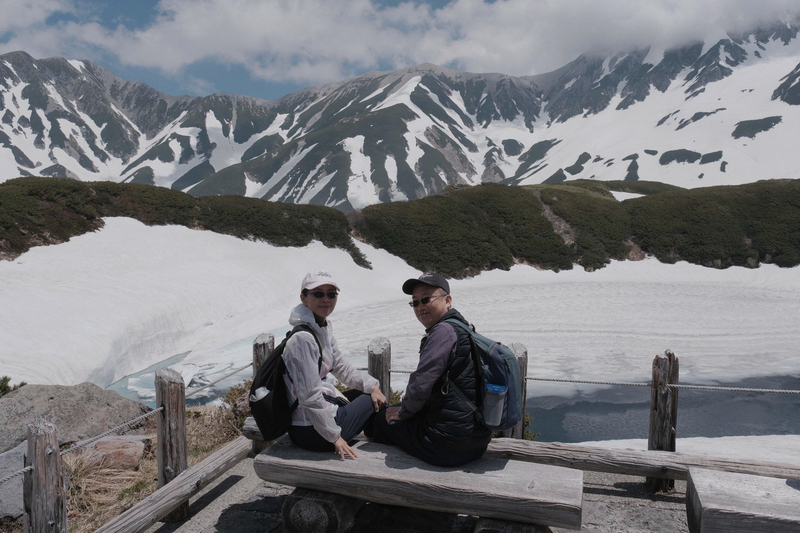
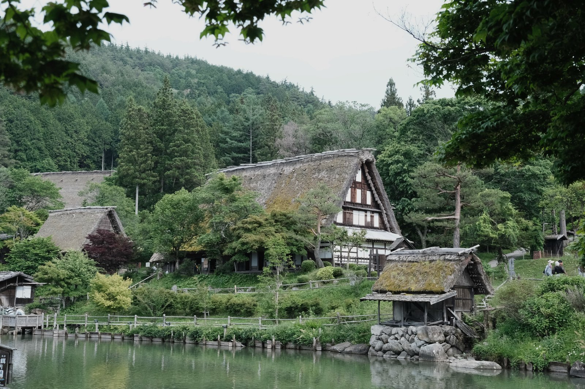
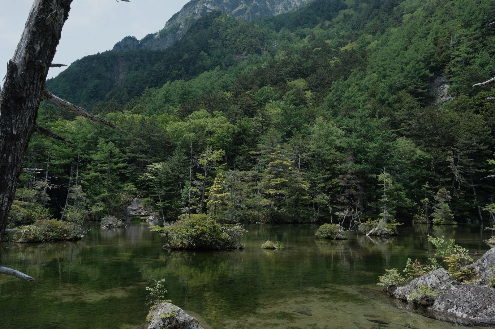

2025 Jun / Japan / #旅途
日本北陸十日遊
北陸十日遊是目前比較有路線感的一趟。移動很多，也看了很多不一樣的風景，從雪牆到老街，每天醒來都像換了一個版本的日本。

穿過雪牆
雪牆真的滿震撼的。站在中間會覺得人很小，而且會突然很具體地感覺到，原來季節可以留下這麼高的痕跡。
山城和老街
後面幾天比較喜歡的是那些慢慢走的地方。木造房子、庭園、橋、路邊小店，不一定是最有名的景點，但很適合留在照片裡。




